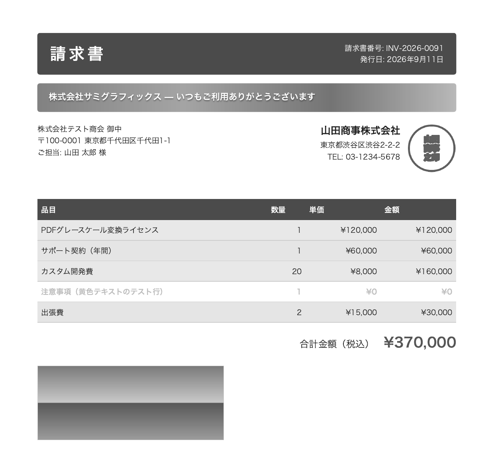
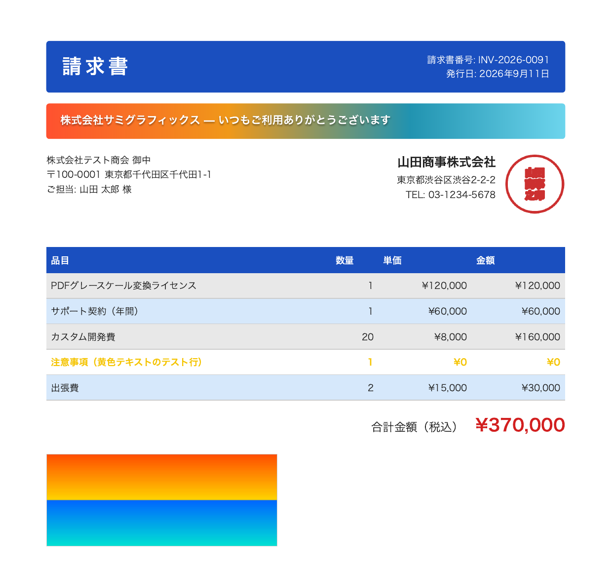

カラーの PDF を、文字のまま白黒に。
sumi は PDF の色指定だけを書き換えて、グレースケールや白黒 2 値の PDF を作るコマンドです。ページを画像にしないので、テキストの検索やコピー、細い罫線はそのまま残ります。
- Ghostscript を使わない単体のコマンド。MIT ライセンス
- macOS、Windows、Linux 用のビルド済みバイナリ
- Rails などから外部コマンドとして呼び出せます


画像にせず、色の命令だけを書き換える
PDF のページは「この色で塗る」「ここに線を引く」「この文字を書く」という命令の並びでできています。sumi は色を指定する命令だけを見つけてグレーに置き換え、それ以外のバイトは元のままコピーします。
画像、グラデーション、注釈、フォームの中にある色も、同じ考え方で変換します。
変換前
q
3.125 0 0 3.125 0 0 cm
.102 .3098 .749 RG .102 .3098 .749 rg
/G3 gs
60 116 m
60 57 l
…
729 53 l
733 116 l
h
f
Q変換後
q
3.125 0 0 3.125 0 0 cm
0.2958 G 0.2958 g
/G3 gs
60 116 m
60 57 l
…
729 53 l
733 116 l
h
f
Q上の請求書の、青い見出し帯を描く部分です。変わったのは色の指定だけで、図形の命令はそのままです。
グレー = 0.30 × 赤 + 0.59 × 緑 + 0.11 × 青
| 元の色 | RGB | グレースケール | モノクロ（閾値 0.5） |
|---|---|---|---|
| 見出しの青 | .102 .310 .749 | 0.30 | 0 |
| 赤 | 1 0 0 | 0.30 | 0 |
| 緑 | 0 1 0 | 0.59 | 1 |
| 黄 | 1 1 0 | 0.89 | 1 |
PDF 仕様が定める変換式です。黄色のような明るい色は、モノクロでは白になります。
Ghostscript と mutool との比較
同じ PDF をグレースケールに変換する時間とメモリ使用量を、Ghostscript と、MuPDF の mutool recolor と比べました。いずれもコマンドとして 10 回ずつ実行した中央値です。グラフの上のボタンで、計測した 2 台を切り替えられます。PDF の名前から、計測に使った PDF を開けます。
mutool recolor は sumi と同じく、ページを画像化せずに色指定だけを書き換えます。Ghostscript のように描き直さないぶん、sumi との差は小さくなります。ただし MuPDF も Ghostscript と同じ Artifex 製で、ライセンスは AGPL-3.0（または商用ライセンス）です。
実行時間
棒の長さは、PDF ごとにいちばん時間のかかったツールを基準にしています。右の数字は、sumi が何倍速かったか。差が小さいほうのツールと比べています。
-
請求書2 ページ、Chrome で作成
sumi 21 ms、mutool 182 ms、Ghostscript 153 ms。sumi は Ghostscript の7.2 倍Ghostscript 比
-
請求書50 ページ、Chrome で作成
sumi 64 ms、mutool 2,071 ms、Ghostscript 2,553 ms。sumi は mutool の32.5 倍mutool 比
-
インフォグラフィック1 ページ、Adobe PDF Library
sumi 33 ms、mutool 56 ms、Ghostscript 176 ms。sumi は mutool の1.7 倍mutool 比
-
NASA ファクトシート2 ページ、写真あり
sumi 56 ms、mutool 97 ms、Ghostscript 808 ms。sumi は mutool の1.8 倍mutool 比
-
ポスター1 ページ、5.9 MB
sumi 532 ms、mutool 906 ms、Ghostscript 1,235 ms。sumi は mutool の1.7 倍mutool 比
-
地図1 ページ、6.7 MB
sumi 1,373 ms、mutool 1,925 ms、Ghostscript 3,249 ms。sumi は mutool の1.4 倍mutool 比
-
請求書2 ページ、Chrome で作成
sumi 21 ms、mutool 194 ms、Ghostscript 150 ms。sumi は Ghostscript の7.2 倍Ghostscript 比
-
請求書50 ページ、Chrome で作成
sumi 62 ms、mutool 2,285 ms、Ghostscript 2,574 ms。sumi は mutool の36.6 倍mutool 比
-
インフォグラフィック1 ページ、Adobe PDF Library
sumi 36 ms、mutool 57 ms、Ghostscript 154 ms。sumi は mutool の1.6 倍mutool 比
-
NASA ファクトシート2 ページ、写真あり
sumi 59 ms、mutool 92 ms、Ghostscript 621 ms。sumi は mutool の1.6 倍mutool 比
-
ポスター1 ページ、5.9 MB
sumi 596 ms、mutool 886 ms、Ghostscript 1,192 ms。sumi は mutool の1.5 倍mutool 比
-
地図1 ページ、6.7 MB
sumi 1,585 ms、mutool 1,914 ms、Ghostscript 3,320 ms。sumi は mutool の1.2 倍mutool 比
メモリ使用量
プロセスの最大常駐メモリです。棒の長さは、PDF ごとにいちばん多く使ったツールを基準にしています。右の数字は、sumi が何 % のメモリで済んだか。いちばん少なかったツールと比べています。
-
請求書2 ページ、0.34 MB
sumi 10.2 MB、mutool 29.6 MB、Ghostscript 30.9 MB。sumi は mutool の34%mutool 比
-
請求書50 ページ、1.0 MB
sumi 20.9 MB、mutool 441.0 MB、Ghostscript 86.5 MB。sumi は Ghostscript の24%Ghostscript 比
-
インフォグラフィック1 ページ、0.30 MB
sumi 6.2 MB、mutool 7.1 MB、Ghostscript 28.0 MB。sumi は mutool の87%mutool 比
-
NASA ファクトシート2 ページ、0.30 MB
sumi 9.0 MB、mutool 17.5 MB、Ghostscript 43.2 MB。sumi は mutool の52%mutool 比
-
ポスター1 ページ、5.9 MB
sumi 34.6 MB、mutool 54.2 MB、Ghostscript 38.5 MB。sumi は Ghostscript の90%Ghostscript 比
-
地図1 ページ、6.7 MB
sumi 87.5 MB、mutool 69.4 MB、Ghostscript 36.1 MB。sumi は Ghostscript の242%Ghostscript 比
-
請求書2 ページ、0.34 MB
sumi 10.5 MB、mutool 44.6 MB、Ghostscript 31.6 MB。sumi は Ghostscript の33%Ghostscript 比
-
請求書50 ページ、1.0 MB
sumi 20.2 MB、mutool 462.5 MB、Ghostscript 78.8 MB。sumi は Ghostscript の26%Ghostscript 比
-
インフォグラフィック1 ページ、0.30 MB
sumi 6.8 MB、mutool 21.3 MB、Ghostscript 29.0 MB。sumi は mutool の32%mutool 比
-
NASA ファクトシート2 ページ、0.30 MB
sumi 8.6 MB、mutool 31.1 MB、Ghostscript 35.4 MB。sumi は mutool の28%mutool 比
-
ポスター1 ページ、5.9 MB
sumi 30.8 MB、mutool 63.1 MB、Ghostscript 36.6 MB。sumi は Ghostscript の84%Ghostscript 比
-
地図1 ページ、6.7 MB
sumi 72.7 MB、mutool 87.8 MB、Ghostscript 32.8 MB。sumi は Ghostscript の222%Ghostscript 比
- ページの多い帳票ほど差が開きますGhostscript は PDF を解釈して描き直しますが、sumi は色の命令だけを書き換えます。50 ページの請求書では、Ghostscript より Mac で 40.1 倍・Linux で 41.2 倍、mutool より Mac で 32.5 倍・Linux で 36.6 倍速く済みました。
- mutool とはページ数で差がつきますmutool も色指定を書き換える方式なので、1 ページの PDF では 1.2〜1.7 倍の差です。ただし請求書を 2 ページから 50 ページにすると、mutool は 194 ms から 2,285 ms（11.8 倍）、sumi は 21 ms から 62 ms（3.0 倍）になりました（Linux）。メモリも mutool は 44.6 MB から 462.5 MB、sumi は 10.5 MB から 20.2 MB です。Mac でも同じ傾向で、mutool のメモリは 29.6 MB から 441.0 MB になります。
- 大きな PDF では sumi のほうがメモリを使うことがありますsumi は PDF 全体をメモリに読み込むので、ファイルが大きいほど多く使います。6.7 MB の地図では、Ghostscript の 2.4 倍（Mac）と 2.2 倍（Linux）でした。mutool より少なかったのは Linux では 6 件すべて、Mac では 6 件中 5 件です。
- テキストは元のまま取り出せますsumi の出力から抽出したテキストは、どちらの環境でも 6 件とも元の PDF と一致しました。mutool もどちらの環境でも 6 件とも一致します。Ghostscript の出力では、請求書の「発行日」が一続きの文字列として取り出せず、検索できなくなりました。
- 写真の多い PDF は Ghostscript のほうが小さくなりますsumi と mutool は JPEG 画像を可逆圧縮で保存し直すためです。NASA ファクトシートは sumi が 0.84 MB、mutool も 0.83〜0.84 MB、Ghostscript が 0.51 MB（Mac）と 0.24 MB（Linux）でした。
計測方法
2 台で sumi 0.1.0 を Ghostscript および mutool と比べました。Mac は Apple M1 Pro（メモリ 16 GB）、macOS 26.5.2、Ghostscript 10.05.1、mutool 1.28.3 で、2026 年 9 月 13 日に mutool を加えて取り直しました。Linux は AMD Ryzen 7 6800H（GEEKOM A6、メモリ 32 GB）、Omarchy 4.0.1（Arch Linux ベース）、Ghostscript 10.07.1、mutool 1.28.0 で、2026 年 9 月 12 日の計測です。いずれもプロセスの起動を含めてコマンドとして実行し、PDF ごとに 1 回ウォームアップしてから 10 回実行しています。時間とメモリ（最大常駐メモリ）は /usr/bin/time で取得しました。
sumi input.pdf -o output.pdf --overwrite
gs -q -dNOPAUSE -dBATCH -dSAFER -sDEVICE=pdfwrite \
-sColorConversionStrategy=Gray -dProcessColorModel=/DeviceGray \
-o output.pdf input.pdf
mutool recolor -c gray -o output.pdf input.pdf変換後の PDF は poppler でレンダリングして色が残っていないことを確かめ、pdftotext で抽出したテキストを元の PDF と比べました。Ghostscript にも mutool recolor にもベクターのまま白黒 2 値にする機能がないため、比べたのはグレースケール変換だけです。入力の PDF は Mac と Linux で同じものを使いましたが、数値は環境によって変わります。
変換できるもの、残るもの
請求書や帳票でよく使われる要素は、一通り変換できます。変換できない部分は元の色のまま残し、警告を表示します。--strict を付けると、その場合はエラーで終了します。
変換できるもの
- 文字と図形の色RGB、CMYK、グレー、ICC プロファイル付きの色、スポットカラー
- 画像PNG 由来の画像、パレット画像、JPEG、ページに直接埋め込まれた画像
- グラデーション直線状、円形、関数で定義されたもの
- 部品として再利用される描画フォーム XObject、パターン、Type 3 フォント
- 注釈とフォームフィールド表示用の外観、枠線や背景の色、入力欄の文字色
元のまま残るもの
- 暗号化された PDF変換せずにエラーで終了します
- JPEG 2000、JBIG2 のカラー画像元の色のまま残し、警告を表示します
- 頂点ごとに色を持つメッシュ状のグラデーション元の色のまま残し、警告を表示します
- CMYK の色味簡易な式で変換するため、色管理した表示よりシアンなどが明るくなります
詳しくは README の制限事項を参照してください。
インストール
使っている環境を選んで、コマンドを実行してください。ファイルは GitHub Releases からもダウンロードできます。
curl -L https://github.com/champierre/sumi/releases/latest/download/sumi-aarch64-apple-darwin.tar.gz | tar xz
sudo mkdir -p /usr/local/bin
sudo mv sumi-aarch64-apple-darwin/sumi /usr/local/bin/
sumi --versioncurl -L https://github.com/champierre/sumi/releases/latest/download/sumi-x86_64-apple-darwin.tar.gz | tar xz
sudo mkdir -p /usr/local/bin
sudo mv sumi-x86_64-apple-darwin/sumi /usr/local/bin/
sumi --versionInvoke-WebRequest -Uri https://github.com/champierre/sumi/releases/latest/download/sumi-x86_64-pc-windows-msvc.zip -OutFile sumi.zip
Expand-Archive sumi.zip -DestinationPath .
.\sumi-x86_64-pc-windows-msvc\sumi.exe --versionPowerShell で実行します。sumi.exe を PATH の通ったフォルダに移すと、どこからでも sumi で使えます。
curl -L https://github.com/champierre/sumi/releases/latest/download/sumi-x86_64-unknown-linux-musl.tar.gz | tar xz
sudo mv sumi-x86_64-unknown-linux-musl/sumi /usr/local/bin/
sumi --version静的リンクのバイナリなので、ディストリビューションを問わず動きます。
curl -L https://github.com/champierre/sumi/releases/latest/download/sumi-aarch64-unknown-linux-musl.tar.gz | tar xz
sudo mv sumi-aarch64-unknown-linux-musl/sumi /usr/local/bin/
sumi --version静的リンクのバイナリなので、ディストリビューションを問わず動きます。
Rust の開発環境があれば、ソースからもインストールできます。
cargo install --git https://github.com/champierre/sumi sumi-cli使い方
入力ファイルと出力先を指定するだけで、グレースケールに変換します。
出力先に同じ名前のファイルがあると、上書きせずに終了します。変換に失敗しても、途中まで書いたファイルは残りません。
オプションと終了コードの一覧は sumi --help で確認できます。
コマンドライン
# グレースケール
sumi invoice.pdf -o invoice-gray.pdf
# 白黒 2 値（閾値を変えるときは --threshold）
sumi invoice.pdf -o invoice-mono.pdf --mode monochrome
# 既存のファイルを上書きする
sumi invoice.pdf -o invoice-gray.pdf --overwrite
# 標準入出力で変換する
cat invoice.pdf | sumi - -o - > invoice-gray.pdfRails から呼び出す
require "open3"
_stdout, stderr, status = Open3.capture3(
"sumi", input_path.to_s, "-o", output_path.to_s,
"--overwrite", "--timeout", "30"
)
raise "sumi failed: #{stderr}" unless status.success?